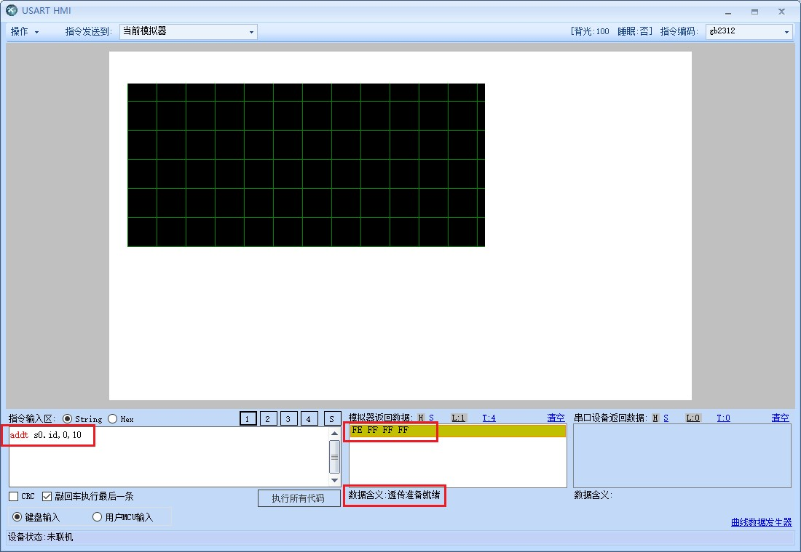
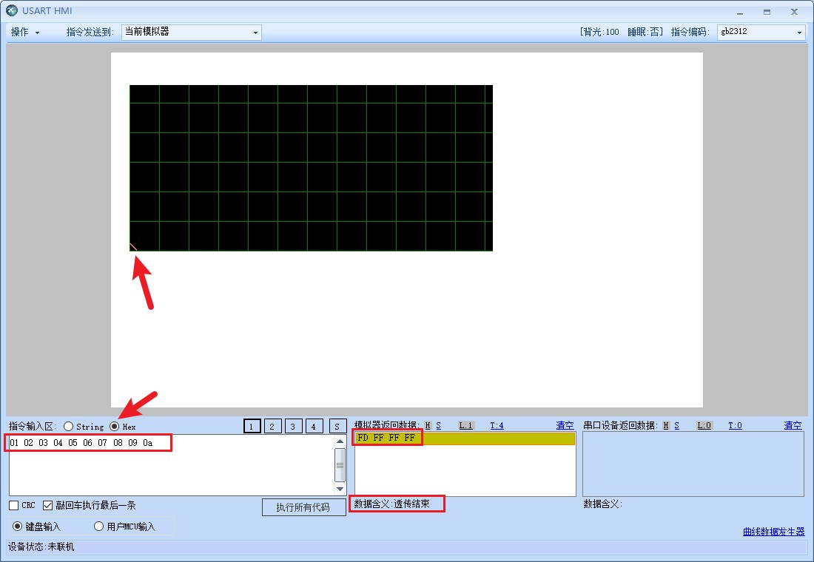

addt-曲线数据透传指令
往当前页面的曲线控件透传数据，不支持跨页面透传曲线控件数据
addt objid,ch,qyt
objid: 曲线控件ID序号(此处必须是ID号，不支持使用控件名称)
ch:曲线控件中的通道号
qyt:本次透传数据的点数量
addt-示例1
//s0曲线控件的通道0进入数据透传模式，透传点数为100点
//推荐使用这种方式，不会因为s0的id号改变而报错
addt s0.id,0,100
注意
曲线数据只支持8位数据，最小0，最大255。单次透传数据量最大1024字节
发完透传指令后，用户需要等待设备响应才能开始透传数据，设备收到透传指令后，准备透传初始化数据大概需要5ms左右(如果在透传指令执行前串口缓冲区还有很多别的指令，那时间会更长,且t系列和k系列会更久)，设备透传初始化准备好以后会发送一个透传就绪的数据给用户（0XFE+结束符），表示设备已经准备好，此时可以开始发送透传数据。透传数据为纯16进制数据，不再使用字符串，也不再需要结束符,设备收完指定的数据量以后，才会恢复指令接收状态。否则一直处于数据透传状态，透传数据完成以后,设备会发送结束标记给用户（0XFD+结束符）。
在指定的透传数量传输完成以前，曲线不会刷新，透传完毕之后会立即自动刷新。
注意
请注意当曲线波形控件的ch属性为1（通道数量为1）时，只有一个通道0可以使用，而不是通道1
在调试窗口中使用addt指令
1.使用addt向s0的通道0透传10个点

2.切换到hex模式发送数据

addt指令-样例工程下载
暂无
addt-c语言示例
单片机使用addt指令向串口屏透传100个点
//向曲线s0的通道0透传100个数据,addt指令不支持跨页面
printf("addt s0.id,0,100\xff\xff\xff");
//等待适量时间
delay_ms(100);
for(int i =0;i<100;i++)
{
printf("%c",(int)(rand() % 256));
}
//确保透传结束，以免影响下一条指令
printf("\x01\xff\xff\xff");